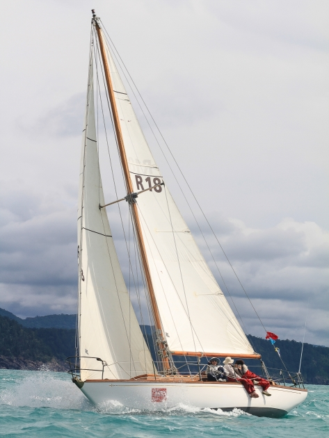

Home
Deagon Slipways is a family operated yard owned by the sailer and boatbuilder, Peter Kerr. Located on Cabbage Tree Creek in the Sandgate reigon the yard has been operating for more than 50 years.
At the yard we specialise in the maintenance and restoration of wooden boats, with a crew of experienced boatbuilders who have worked on a range of projects. We also cater for boats of various construction types other than timber. In addition we can carry out other marine projects on request.
Since the beginning of 2015, the slipway will be creating a line of composite sailing dinghies.
Whether you need a full restoration, some maintenance or just some advice, give us a call.